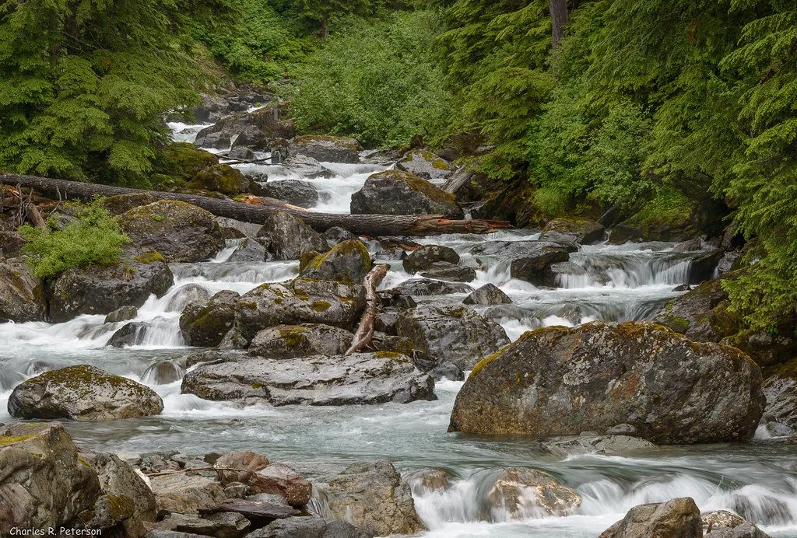
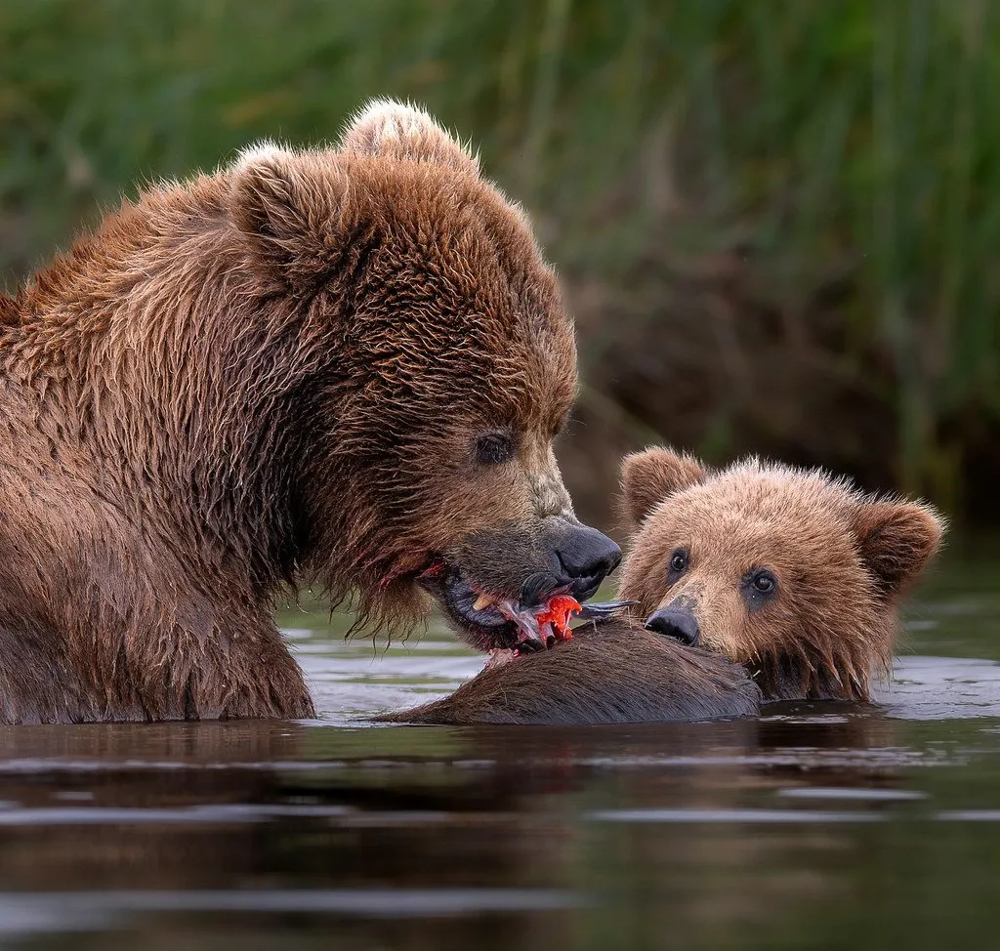
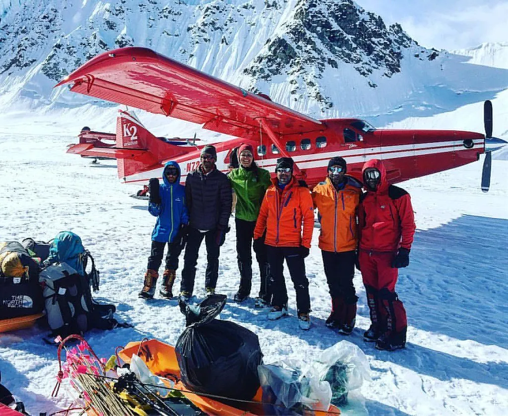
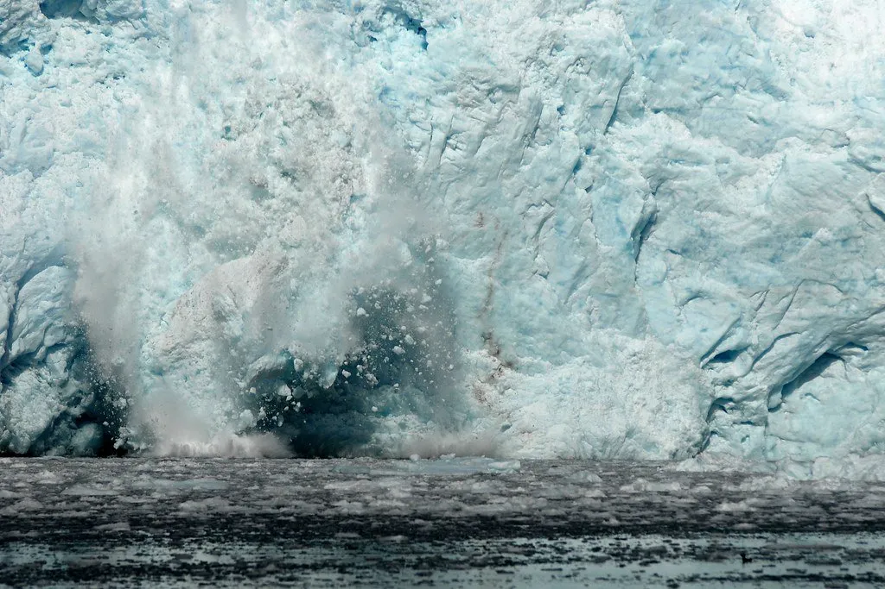
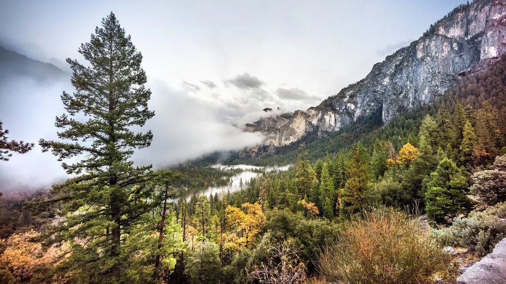
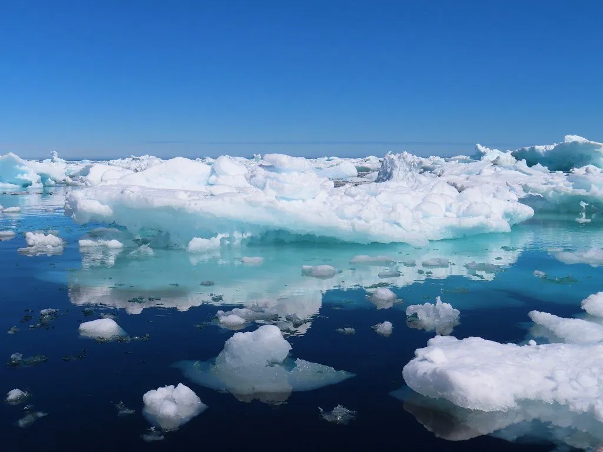
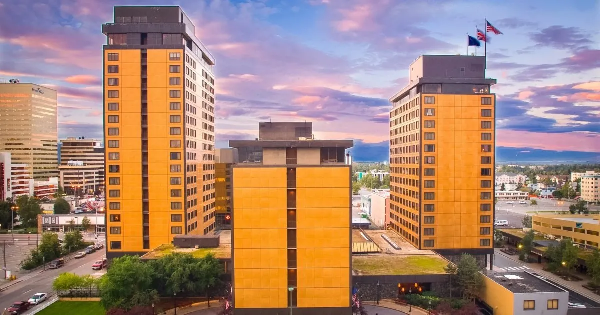
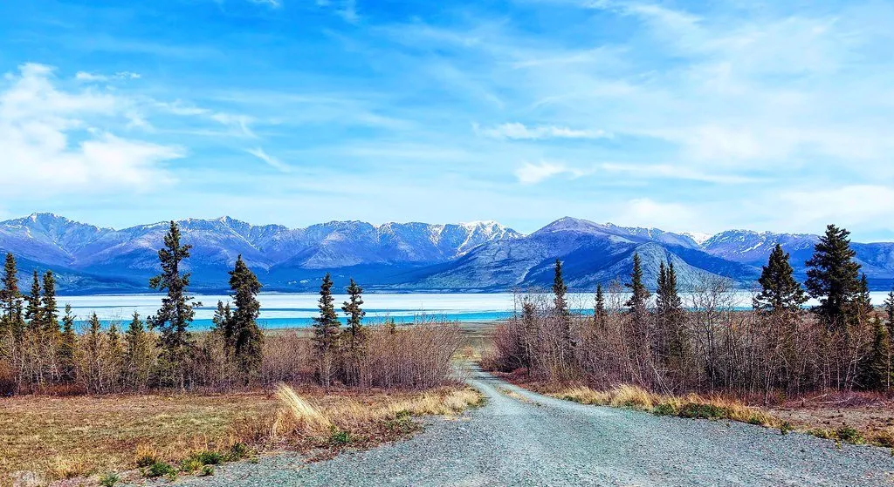
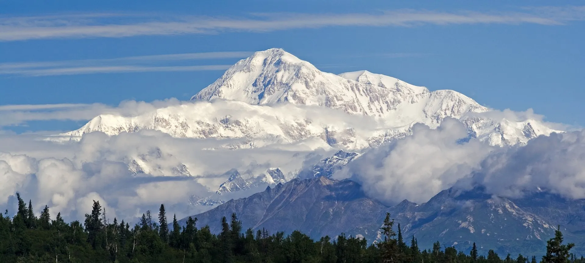
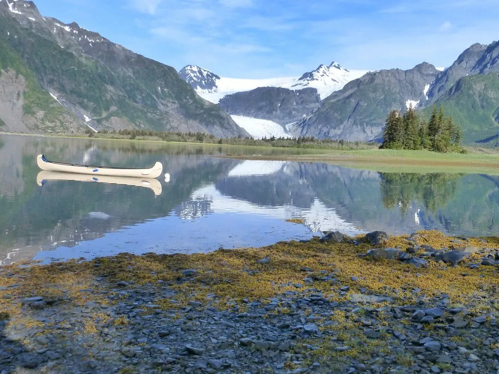

Día 1 · Anchorage
Llegada
Vuelo BA vía LAX o Seattle (~18h). Cena en Crow's Nest con vista a Cook Inlet. Presentación del naturalista.

Lake Clark, Kenai Fjords y Denali · Edición julio 2027
Ver fechas y preciosAlaska es del tamaño de México con la población de Mendoza: 1,6 millones de km² para 730.000 habitantes. El 99,98% es wilderness administrado por el Servicio de Parques, BLM, o las tribus originarias. Es la única región del mundo desarrollado donde el wilderness sigue siendo realmente wilderness — no parque temático, sino territorio donde el ecosistema funciona como funcionó hace 10.000 años.
Julio es el mes específico. Veinte horas de luz, el salmón rojo corriendo río arriba, los osos pardos (hasta 700 kg) bajando de las montañas a concentrarse en las desembocaduras. Lake Clark National Park ofrece la mejor combinación de osos sin acostumbramiento turístico, opcional Brooks Falls. Después: Denali en flightseeing con aterrizaje en glaciar, y Kenai Fjords con orcas, ballenas jorobadas y catorce glaciares de marea. Once días con naturalista en piso, bush planes, kennel Iditarod y cultura Athabascan.

Alaska Bear Camp en Chinitna Bay, observación en pradera abierta con guías de 10+ años de experiencia, sin necesidad de torres ni distancias artificiales.
Beechcraft King Air con skis aterriza sobre nieve compacta a 2.300m. Caminata sobre el glaciar con macizo Denali atrás.
Catorce glaciares de marea desde un solo barco. Orcas residentes (tres pods), jorobadas alimentándose, leones marinos de Steller, frailecillos cornudos.
Vuelo BA vía LAX o Seattle (~18h). Cena en Crow's Nest con vista a Cook Inlet. Presentación del naturalista.
Mañana visita a kennel de musher campeón (Seavey o equivalente) con carting ride. Hidroavión Lake Hood → Chinitna Bay (1h sobre volcán Iliamna).
Salida 6 AM con guía de osos. Pradera abierta — osos pastando, mama con cachorros a 40m. Almuerzo de campo. Tarde en desembocadura del río con osos pescando.

Brooks Falls opcional: hidroavión a Katmai (~$450/pax adicional) para los osos saltando por salmón en cataratas. Alternativa: caminata extendida en Chinitna. Noche de salmón asado al fuego.
Caminata final al amanecer. Hidroavión a Anchorage, vuelo doméstico a Talkeetna. Talkeetna Alaskan Lodge con vista a Denali.

K2 Aviation o Talkeetna Air Taxi — Beechcraft King Air o de Havilland Otter con skis. 1.5h sobre el macizo. Aterrizaje en glaciar a 2.300m, 30-45 min en la nieve.
Seward Highway (All-American Road). Paradas en Turnagain Arm (bore tides), Girdwood. Almuerzo en Sevenglaciers. Llegada Kenai Fjords Wilderness Lodge (boat-in).
Barco privado por Resurrection Bay. Aialik Glacier (calving constante), Bear Glacier, Northwestern Fjord. Almuerzo a bordo. Orcas, jorobadas, leones marinos, frailecillos.

Mañana en lodge: kayak o caminata al glaciar cercano. Visita opcional Alaska SeaLife Center o Exit Glacier. Drive a Anchorage. Cena de despedida en Marx Bros. Café con lectura de John McPhee.
Mañana Alaska Native Heritage Center con guía Athabascan / Dena'ina. Conversación sobre soberanía tribal contemporánea. Traslado aeropuerto.
Vuelos internacionales desde Anchorage.
Sumá días al final del viaje, con salidas privadas.

Excursión de día desde Lake Clark a Katmai. La imagen icónica de oso pardo saltando por salmón.

Pre-trip por el sureste de Alaska: Juneau, Tracy Arm, Glacier Bay NP en barco pequeño.
Post-trip al verdadero Ártico: vuelo a Kotzebue, Kobuk Valley NP (las dunas árticas), Gates of the Arctic.

Anchorage (5 estrellas urbano histórico)

Chinitna Bay, Lake Clark NP (campamento de carpas, fly-in)

Talkeetna (lodge histórico con vista a Denali)

Resurrection Bay (boat-in, dentro del parque nacional)
| Salida | Disponibilidad | Precio desde | |
|---|---|---|---|
| 5 jul 2027 | Abierta | $11,000 | Reservar → |
| 12 jul 2027 | Pocas plazas | $11,000 | Reservar → |
| 19 jul 2027 | Lista de espera | $11,000 | Reservar → |
| 26 jul 2027 | Abierta | $11,000 | Reservar → |
| 2 ago 2027 | Abierta | $10,800 | Reservar → |
Precios por persona en habitación doble. Suplemento de habitación individual a consultar.